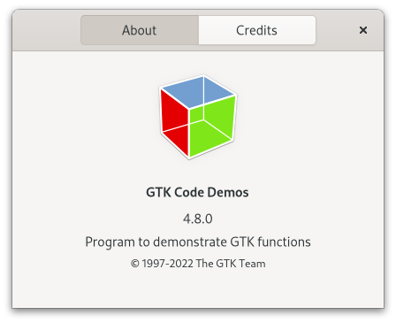

Gtk.AboutDialog¶
Example¶

- Subclasses:
None
Methods¶
- Inherited:
Gtk.Window (64), Gtk.Widget (183), GObject.Object (37), Gtk.Accessible (18), Gtk.Buildable (1), Gtk.Native (6), Gtk.Root (3)
- Structs:
class |
|
|
|
|
|
|
|
|
|
|
|
|
|
|
|
|
|
|
|
|
|
|
|
|
|
|
|
|
|
|
|
|
|
|
|
|
|
|
|
|
|
|
|
|
|
|
|
|
Virtual Methods¶
Properties¶
- Inherited:
Name |
Type |
Flags |
Short Description |
|---|---|---|---|
[ |
r/w/en |
||
[ |
r/w/en |
||
r/w/en |
|||
r/w/en |
|||
[ |
r/w/en |
||
r/w/en |
|||
r/w/en |
|||
r/w/en |
|||
r/w/en |
|||
r/w/en |
|||
r/w/en |
|||
r/w/en |
|||
r/w/en |
|||
r/w/en |
|||
r/w/en |
|||
r/w/en |
Signals¶
- Inherited:
Name |
Short Description |
|---|---|
Emitted every time a URL is activated. |
Fields¶
- Inherited:
Class Details¶
- class Gtk.AboutDialog(*args, **kwargs)¶
- Bases:
- Abstract:
No
Displays information about a program.
The shown information includes the programs’ logo, name, copyright, website and license. It is also possible to give credits to the authors, documenters, translators and artists who have worked on the program.
An about dialog is typically opened when the user selects the
Aboutoption from theHelpmenu. All parts of the dialog are optional.<picture> <source srcset=”aboutdialot-dark.png” media=”(prefers-color-scheme: dark)”> <img alt=”An example
Gtk.AboutDialog" src=”aboutdialog.png”> </picture>About dialogs often contain links and email addresses.
GtkAboutDialogdisplays these as clickable links. By default, it calls [method`Gtk`.FileLauncher.launch] when a user clicks one. The behaviour can be overridden with the [signal`Gtk`.AboutDialog::activate-link] signal.To specify a person with an email address, use a string like
Edgar Allan Poe <edgar@poe.com>. To specify a website with a title, use a string likeGTK team https://www.gtk.org.To make constructing an about dialog as convenient as possible, you can use the function [func`Gtk`.show_about_dialog] which constructs and shows a dialog and keeps it around so that it can be shown again.
Note that GTK sets a default title of
_("About %s")on the dialog window (where%sis replaced by the name of the application, but in order to ensure proper translation of the title, applications should set the title property explicitly when constructing an about dialog, as shown in the following example:```c
Gio.File*logo_file =Gio.File.new_for_path(“./logo.png”);Gdk.Texture*example_logo =Gdk.Texture.new_from_file(logo_file,None);GObject.Object.unref(logo_file);gtk_show_about_dialog (
None, “program-name”, “ExampleCode”, “logo”, example_logo, “title”, _(“About ExampleCode”),None); ```- Shortcuts and Gestures
GtkAboutDialogsupports the following keyboard shortcuts:<kbd>Escape</kbd> closes the window.
- CSS nodes
GtkAboutDialoghas a single CSS node with the namewindowand style class.aboutdialog.- classmethod new()[source]¶
- Returns:
a newly created
GtkAboutDialog- Return type:
Creates a new
GtkAboutDialog.
- add_credit_section(section_name, people)[source]¶
- Parameters:
Creates a new section in the “Credits” page.
- get_artists()[source]¶
- Returns:
A
NULL-terminated string array containing the artists- Return type:
[
str]
Returns the names of the artists which are displayed in the credits page.
- get_authors()[source]¶
- Returns:
A
NULL-terminated string array containing the authors- Return type:
[
str]
Returns the names of the authors which are displayed in the credits page.
- get_documenters()[source]¶
- Returns:
A
NULL-terminated string array containing the documenters- Return type:
[
str]
Returns the name of the documenters which are displayed in the credits page.
- get_license_type()[source]¶
- Returns:
a [enum`Gtk`.License] value
- Return type:
Retrieves the license type.
- get_logo()[source]¶
- Returns:
the paintable displayed as logo or
NULLif the logo is unset or has been set via [method`Gtk`.AboutDialog.set_logo_icon_name]- Return type:
Returns the paintable displayed as logo in the about dialog.
- get_logo_icon_name()[source]¶
- Returns:
the icon name displayed as logo, or
NULLif the logo has been set via [method`Gtk`.AboutDialog.set_logo]- Return type:
Returns the icon name displayed as logo in the about dialog.
- get_translator_credits()[source]¶
-
Returns the translator credits string which is displayed in the credits page.
- get_wrap_license()[source]¶
- Returns:
TRUEif the license text is wrapped- Return type:
Returns whether the license text in the about dialog is automatically wrapped.
- set_artists(artists)[source]¶
- Parameters:
artists ([
str]) – the authors of the artwork of the application
Sets the names of the artists to be displayed in the “Credits” page.
- set_authors(authors)[source]¶
- Parameters:
authors ([
str]) – the authors of the application
Sets the names of the authors which are displayed in the “Credits” page of the about dialog.
- set_comments(comments)[source]¶
-
Sets the comments string to display in the about dialog.
This should be a short string of one or two lines.
- set_copyright(copyright)[source]¶
-
Sets the copyright string to display in the about dialog.
This should be a short string of one or two lines.
- set_documenters(documenters)[source]¶
- Parameters:
documenters ([
str]) – the authors of the documentation of the application
Sets the names of the documenters which are displayed in the “Credits” page.
- set_license(license)[source]¶
-
Sets the license information to be displayed in the about dialog.
If
licenseisNULL, the license page is hidden.
- set_license_type(license_type)[source]¶
- Parameters:
license_type (
Gtk.License) – the type of license
Sets the license of the application showing the about dialog from a list of known licenses.
This function overrides the license set using [method`Gtk`.AboutDialog.set_license].
- set_logo(logo)[source]¶
- Parameters:
logo (
Gdk.PaintableorNone) – aGdkPaintable
Sets the logo in the about dialog.
- set_logo_icon_name(icon_name)[source]¶
-
Sets the icon name to be displayed as logo in the about dialog.
- set_program_name(name)[source]¶
-
Sets the name to display in the about dialog.
If
nameis not set, the string returned byg_get_application_name()is used.
- set_system_information(system_information)[source]¶
-
Sets the system information to be displayed in the about dialog.
If
system_informationisNULL, the system information page is hidden.See [property`Gtk`.AboutDialog:system-information].
- set_translator_credits(translator_credits)[source]¶
-
Sets the translator credits string which is displayed in the credits page.
The intended use for this string is to display the translator of the language which is currently used in the user interface. Using
gettext(), a simple way to achieve that is to mark the string for translation:``c GtkWidget *about = gtk_about_dialog_new ();
- gtk_about_dialog_set_translator_credits (GTK_ABOUT_DIALOG (about),
_(“translator-credits”));
It is a good idea to use the customary
msgid“translator-credits” for this purpose, since translators will already know the purpose of thatmsgid, and sinceGtkAboutDialogwill detect if “translator-credits” is untranslated and omit translator credits.
Signal Details¶
- Gtk.AboutDialog.signals.activate_link(about_dialog, uri)¶
- Signal Name:
activate-link- Flags:
- Parameters:
about_dialog (
Gtk.AboutDialog) – The object which received the signaluri (
str) – the URI that is activated
- Returns:
TRUEif the link has been activated- Return type:
Emitted every time a URL is activated.
Applications may connect to it to override the default behaviour, which is to call [method`Gtk`.FileLauncher.launch].
Property Details¶
- Gtk.AboutDialog.props.artists¶
- Name:
artists- Type:
[
str]- Default Value:
[]- Flags:
The people who contributed artwork to the program.
Each string may contain email addresses and URLs, which will be displayed as links.
- Gtk.AboutDialog.props.authors¶
- Name:
authors- Type:
[
str]- Default Value:
[]- Flags:
The authors of the program.
Each string may contain email addresses and URLs, which will be displayed as links, see the introduction for more details.
- Gtk.AboutDialog.props.comments¶
- Name:
comments- Type:
- Default Value:
- Flags:
Comments about the program.
This string is displayed in a label in the main dialog, thus it should be a short explanation of the main purpose of the program, not a detailed list of features.
- Gtk.AboutDialog.props.copyright¶
- Name:
copyright- Type:
- Default Value:
- Flags:
Copyright information for the program.
- Gtk.AboutDialog.props.documenters¶
- Name:
documenters- Type:
[
str]- Default Value:
[]- Flags:
The people documenting the program.
Each string may contain email addresses and URLs, which will be displayed as links, see the introduction for more details.
- Gtk.AboutDialog.props.license¶
- Name:
license- Type:
- Default Value:
- Flags:
The license of the program, as free-form text.
This string is displayed in a text view in a secondary dialog, therefore it is fine to use a long multi-paragraph text. Note that the text is only wrapped in the text view if the “wrap-license” property is set to
TRUE; otherwise the text itself must contain the intended linebreaks.When setting this property to a non-
NULLvalue, the [property`Gtk`.AboutDialog:license-type] property is set to [enum`Gtk`.License.custom] as a side effect.The text may contain links in this format
<http://www.some.place/>and email references in the form<mail-to@some.body>, and these will be converted into clickable links.
- Gtk.AboutDialog.props.license_type¶
- Name:
license-type- Type:
- Default Value:
- Flags:
The license of the program.
The
GtkAboutDialogwill automatically fill out a standard disclaimer and link the user to the appropriate online resource for the license text.If [enum`Gtk`.License.unknown] is used, the link used will be the same specified in the [property`Gtk`.AboutDialog:website] property.
If [enum`Gtk`.License.custom] is used, the current contents of the [property`Gtk`.AboutDialog:license] property are used.
For any other [enum`Gtk`.License] value, the contents of the [property`Gtk`.AboutDialog:license] property are also set by this property as a side effect.
- Gtk.AboutDialog.props.logo¶
- Name:
logo- Type:
- Default Value:
- Flags:
A logo for the about box.
If it is
NULL, the default window icon set with [func`Gtk`.Window.set_default_icon_name] will be used.
- Gtk.AboutDialog.props.logo_icon_name¶
- Name:
logo-icon-name- Type:
- Default Value:
- Flags:
A named icon to use as the logo for the about box.
This property overrides the [property`Gtk`.AboutDialog:logo] property.
- Gtk.AboutDialog.props.program_name¶
- Name:
program-name- Type:
- Default Value:
- Flags:
The name of the program.
If this is not set, it defaults to the value returned by [func`GLib`.get_application_name].
- Gtk.AboutDialog.props.system_information¶
- Name:
system-information- Type:
- Default Value:
- Flags:
Information about the system on which the program is running.
This information is displayed in a separate page, therefore it is fine to use a long multi-paragraph text. Note that the text should contain the intended linebreaks.
The text may contain links in this format
<http://www.some.place/>and email references in the form<mail-to@some.body>, and these will be converted into clickable links.
- Gtk.AboutDialog.props.translator_credits¶
- Name:
translator-credits- Type:
- Default Value:
- Flags:
Credits to the translators.
This string should be marked as translatable.
The string may contain email addresses and URLs, which will be displayed as links, see the introduction for more details.
- Gtk.AboutDialog.props.version¶
- Name:
version- Type:
- Default Value:
- Flags:
The version of the program.
- Gtk.AboutDialog.props.website¶
- Name:
website- Type:
- Default Value:
- Flags:
The URL for the link to the website of the program.
This should be a string starting with
http://orhttps://.
- Gtk.AboutDialog.props.website_label¶
- Name:
website-label- Type:
- Default Value:
- Flags:
The label for the link to the website of the program.